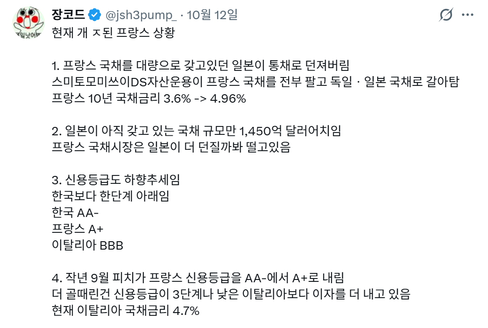
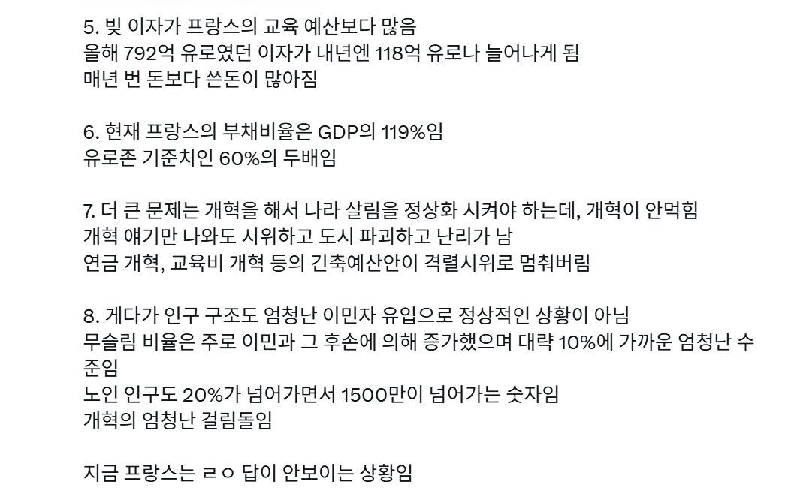

민주주의가 포퓰리즘과 결합되었을 때에 방만경영이 일어나는 것이라서 그것을 꼬집은 게 아닌가 싶어
물론 반대로 시민의식이 높으면 그러한 행위들을 막는 역할도 하지
네 말처럼 일당제나 독재가 더 잘못된 길을 가기 쉬운 것도 맞다고 생각해
지금 프랑스의 유력 후보들은 보면
극우인 마린르펜은 연급수령 나이를 62세에서 60세로 낮추겠다고 하고 있고
극좌는 64세에서 62세로 원점 회귀하겠다고 공약을 내걸었잖아?
이런 세태들을 보면 프랑스 정치판이 미쳐돌아간다는 것을 보여주는 단면이 아닐까 싶어
부패랑 방만경영은 다르지
지금 많은 민주주의 나라들이 경제가 어려워서 정치 체제적으로 고통받고 있음. 민주주의긴 하지만 유럽 많은 나라에서 극극좌 아니면 극극우처럼 거의 일당제에 가까울 정도의 극단성이 보이고 있음. 그래서 민주주의 시스템에 한계가 온 거 아니냐 이런 말이 나오고 있는 중. 국민들이 오히려 자기 입맛에 맞는 독재자를 선출하고 있는 느낌임
또 같은 한표 드립이잖냐 결국
고대 그리스에서도 잘 나가던 아테네가 망할 때 플라톤을 비롯한 당대의 석학들이 하던 말인데
21세기에 또 나와도 이상한 건 아니지
밑도 끝도 없이 민주주의는 영원불멸의 최고 제도이며 모든 면에서 독재나 일당제보다 낫습니다 라는 주장을 하고 싶은 거임? 네 주장을 얘기해봐 그럼 ㅋㅋ
"민주주의는 최악의 정부 형태다. 지금까지 시도됐던 다른 모든 형태를 제외하면"
프랑스판 대처 한명 나와서 수술하고 마녀사냥 당해야지 뭐.
한국도 신용등급 엄청 낮게 나온거 왜저래?
무디스 기준 한국은 위에서 3번째 등급이고 우리보다 높은 신용등급은 14개 나라 밖에 없어
그럼 프랑스 내려도 높은 편인거네
ㅇㅇ
개인적으로는 민주주의보다는 수명의 괴상한 증대로 인한 문제같긴 함
가족성이 깨지고 세대 분리가 이뤄지고 미래가 필요없어지니 사람들은 국가와 미래를 위한 선택을 할 이유도 없으니.
파리 올림픽이 왜 충격이였는데?
파리 올림픽 안 봤어?
안 봤으면 보지않는 것을 강력히 추천할게
진짜 욕나올 수준의 개씹썅똥꾸릉내나는 올림픽이었으니까
개회식만 검색해서 봐봐
ㅇㅋ 고마웡
너 군대갔었음?
음 그떄 갇혀있긴 했음;;
올림픽? 그 뽕알 나온거?
털숭숭여자
이탈리아 BBBㅋㅋㅋ
여기 부자들로 해결하자는 애들이 딱 저 나라 국민하고 생각이 똑같은거 아닌가?
걍 인플레이션으로 신용화폐주의의 끝이 온거지 민주주의의 한계는 뭔 ㅋㅋㅋ
이런소리 하는 애들 정작 제한선거권 하면 젤 먼저 참정권 없어지는데